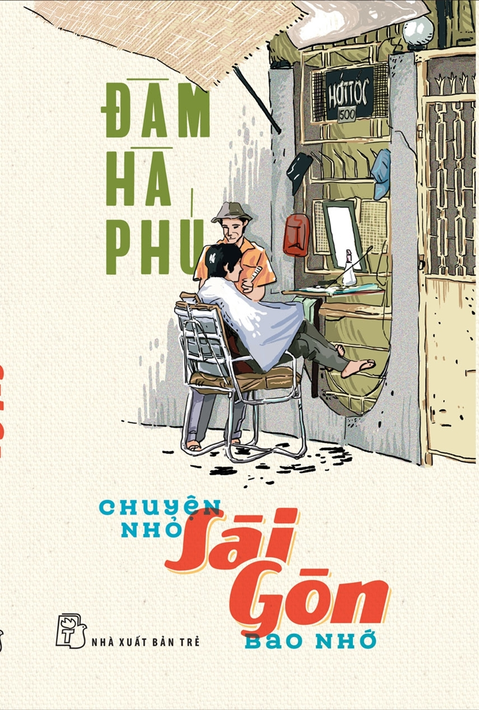

| CHUYỆN NHỎ SÀI GÒN BAO NHỚ | |
|---|---|
|  | Tác giả: Đàm Hà Phú |
| Hiệu đính: Chưa có thông tin | |
| Chủ biên: Chưa có thông tin | |
| Nhà xuất bản: Nhà xuất bản Trẻ | |
| Thể loại: Tản văn | |
Nội dung của cuốn:"Chuyện Nhỏ Sài Gòn Bao Nhớ" là tập hợp những câu chuyện đời thường về cuộc sống và con người ở Sài Gòn qua lăng kính của tác giả Đàm Hà Phú. Dù không sinh ra tại Sài Gòn, tác giả đã có hơn hai mươi năm sống và làm việc tại thành phố này. Những câu chuyện trong sách nói về sự nghĩa tình, lòng hiếu khách và tính tử tế của người Sài Gòn, từ những con hẻm nhỏ, các khu chợ, quán cơm cho đến những cuộc gặp gỡ đầy bất ngờ. Cuốn sách mang đến cho độc giả cảm xúc chân thật về một Sài Gòn náo nhiệt nhưng đầy tình người, từ sự thân thiện, cởi mở đến những khoảnh khắc lặng lẽ mà sâu sắc Xin trân trọng giới thiệu cuốn sách cùng bạn. |
|